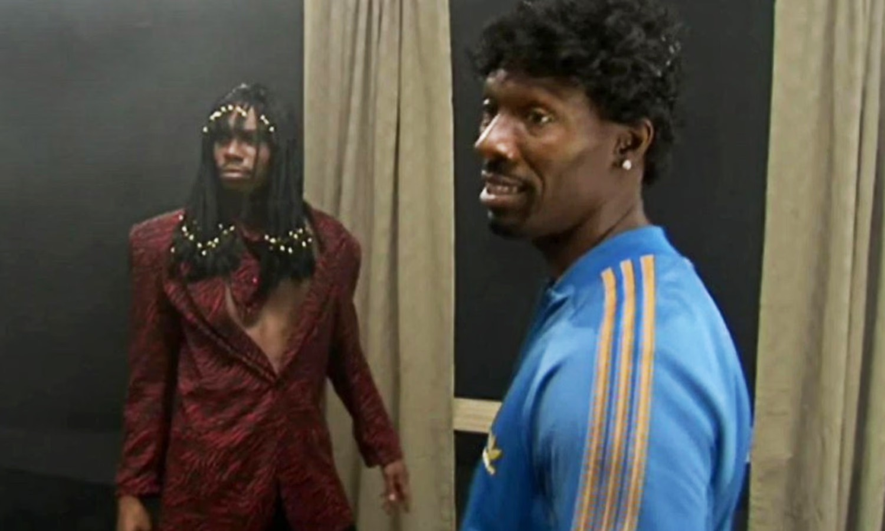

Hi, I'm Dante.
Ask me all the questions.
So, what's your name?
press Enter ↵
Brass Tacks
Over 10 years designing where complex systems and real user need overlap on the Venn diagram. Marketo, Upwork, Meroxa, Teamshares, T-Mobile.
AI products need designers who can hold the product together when the rules don't exist yet. That's been my whole career.
Selected work
Why financial platforms are systems problems
On fragmentation, dual personas, and what payroll across 90+ companies taught me about designing for money that moves.
Designing platforms where two sides need each other
On dual-persona design, the craft of making both sides feel served, and what payroll networks and data pipelines share with creator platforms.
Designing infrastructure people trust with their money
On visibility, complex workflows, and why the design patterns that matter in traditional payments carry directly into digital currency.
Where brand storytelling meets the buy button
On product narratives, commerce flows, and what selling guitars taught me about the moment a story becomes a transaction.
Designing for people who live in the product
On cognitive load, multi-persona platforms, and what full-day software demands from a design system.
Case Study

Teamshares
Payroll reporting
Saving Teamshares ~$3.1M annually without adding or subtracting headcount.
Case Study
Teamshares
A hiring engine for a company of companies
Reframing a recruiting tool into talent pipeline infrastructure for 90+ acquired businesses.
Case Study

Marketo / Adobe
The design system that survived an acquisition
Built Sky's design system from the ground up. Patterns contributed upstream to Adobe Spectrum.
Case Study
Marketo / Adobe
733% adoption increase through trust-first migration
Users were resistant to disruption. That was a design problem.
Case Study

Meroxa
Pivoting from a builder to a data observability platform
How a discovery in research forced a pivot that opened doors for Meroxa.

ThoughtsCharlie Murphy's Law
Surprises in product design come in a few flavors. There are the ones you bring on yourself by not staying close enough to your PM or Engineering. There are the last minute asks that appear from nowhere.
Culture lives in what power permits
I used to think culture was set by the people in the room. The tone of a standup. The way a lead gave feedback. But the more places I've worked, the more I believe culture is shaped by what leadership lets people get away with.
Squidward would never. SpongeBob would.
Squidward is the designer who's seen it all. Too experienced to be surprised. Too "sensible" to chase anything that might not scale. SpongeBob, though? He's the one sketching fish with arms just to see what happens.
Flower wall — color study

Stacked — junkyard

518 — urban texture

Vintage — interior detail

L Dante Guarin
Principal Product Designer
Irvine, CA
13+Years exp.
50M+Users reached
5Companies
3Design systems
Experience at
Adobe/Marketo
Upwork
Teamshares
Meroxa
T-Mobile
Selected work
Case Study
Teamshares
Payroll reporting
Saving Teamshares ~$3.1M annually without adding or subtracting headcount.
Case Study
Teamshares
A hiring engine for a company of companies
Reframing a recruiting tool into talent pipeline infrastructure for 90+ acquired businesses.
Case Study
Meroxa
Pivoting from a builder to a data observability platform
How a discovery in research forced a pivot that opened doors for Meroxa.
How does Dante match up?
Paste a job description or URL and let's see how he matches up.
0 / 10,000
Ready to talk?
If the role looks right, let's get on a call.
Am I a fit?
Paste a job description or URL and let's see how we match up.
0 / 5000